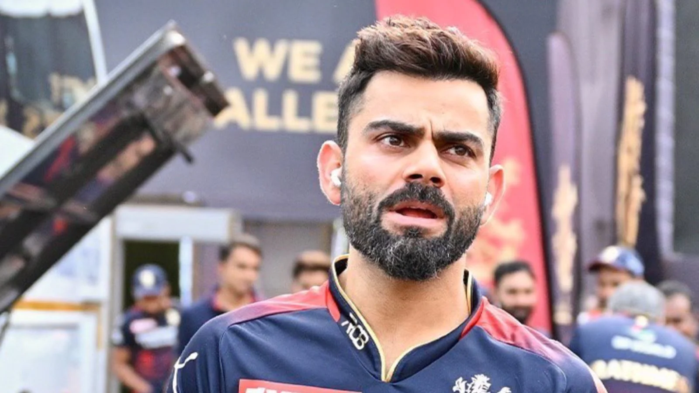

Perry was born and raised in the Sydney suburb of Wahroonga, attending Beecroft Primary School and Pymble Ladies' College.[10][11] She was Sports, Athletics, and Cricket Captain at Pymble.[12][13] During her school years, she played a range of sports beside cricket and soccer, such as tennis, athletics, touch football and golf. She became friends with future Australian teammate Alyssa Healy at the age of nine, and they played cricket together throughout childhood.[14] Healy occasionally referred to her as "Dags" because of an ill-fitting uniform she wore at junior level,[14] though Perry is more commonly known by the nickname "Pez".[15][16]

ALLYSE PERRY
Virat Kohli (Hindi pronunciation: [ʋɪˈɾɑːʈ ˈkoːɦli] (listen); born 5 November 1988) is an Indian international cricketer and the former captain of the Indian national cricket team who plays as a right-handed batsman for Royal Challengers Bangalore in the IPL and for the Delhi in Indian domestic cricket. Widely regarded as one of the greatest batsmen of all time,[4] Kohli holds the records for scoring most runs in T20 internationals and in the IPL. In 2020, the International Cricket Council named him the male cricketer of the decade. Kohli has also contributed to a number of India's successes, including winning the 2011 World Cup and the 2013 Champions trophy.
KING KOHLI
Abraham Benjamin de Villiers (born 17 February 1984) is a former South African international cricketer. AB de Villiers was named as the ICC ODI Player of the Year three times during his 15-year international career and was one of the five Wisden cricketers of the decade at the end of 2019.[2] He is regarded as one of the greatest cricketers in the history of the sport and the best batsman of his era.[3][4] AB de Villiers began his international career as a wicket-keeper-batsman, but he has played most often solely as a batsman. He batted at various positions in the batting order, but predominantly in the middle-order.